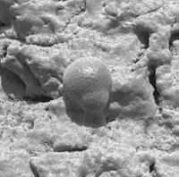
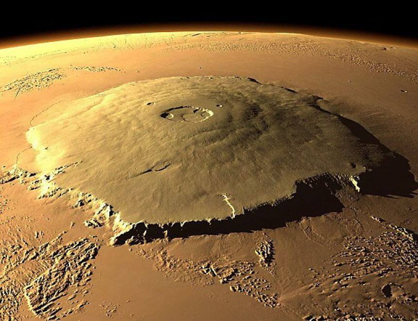
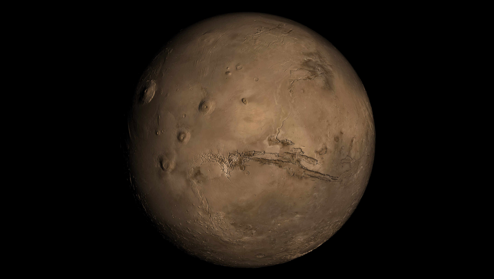

MARTE
Marte e' il quarto pianeta del Sistema solare in ordine di distanza dal Sole ed e' l'ultimo dei pianeti di tipo terrestre dopo Mercurio, Venere e la Terra. E' chiamato 'il Pianeta rosso' a causa del suo colore caratteristico dovuto alle grandi quantita' di ossido di ferro che lo ricoprono.

Pur presentando temperature medie superficiali piuttosto basse e un'atmosfera molto rarefatta, e' il pianeta piu' simile alla Terra tra quelli del Sistema solare. Le sue dimensioni sono intermedie fra quelle del nostro pianeta e della Luna, e presenta un'inclinazione dell'asse di rotazione e durata del giorno simili a quelle terrestri. La sua superficie presenta formazioni vulcaniche, valli, calotte polari, deserti sabbiosi e formazioni geologiche che vi suggeriscono la presenza di un'idrosfera in un lontano passato.

Una microscopica formazione rocciosa originata da interazione con acqua ripresa da Opportunity nel 2004
Fra le formazioni geologiche piu' notevoli di Marte si segnalano l'Olympus Mons o monte Olimpo, il vulcano piu' grande del Sistema solare (alto 27 km), e le Valles Marineris, un lungo canyon notevolmente piu' esteso di quelli terrestri.


A sinistra: il Monte Olimpo; a destra: una foto di Marte dove e' ben visibile Valles Marineris